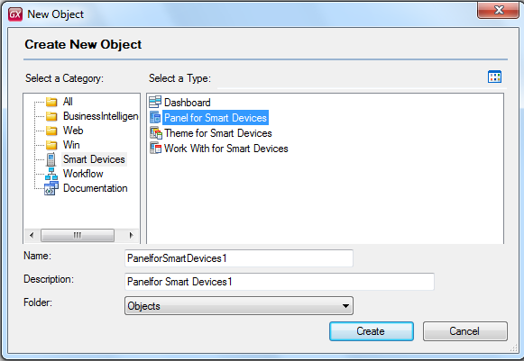

We want to make a Data Entry, display information obtained from various sources, and expose actions and data to the end user. To this end, we have the Panel object (or Entry Panel) object which captures:
- Data – It indicates if data is displayed or edited on screen. In the model, this is done using attributes and variables.
- Conditions – Conditions are specified on data items as well as the order of some of them. Conditions part in Smart Devices Panels and Work With.
- Data Layout – They indicate how data is to be arranged on the screen, in which container, in what position, with what alignment. Given that the layout may change depending on the target device, especially if we’re talking about a Tablet vs. a Phone, we have multiple layouts for one panel. Thus, here at design time we find the first connection between the platform-independent model (GeneXus) and the specific model (what I want to obtain: Android, iOS, etc).
- Data display (associated Controls) – Positioning alone is not enough, because there are several ways to show the same data. For this reason, the connection with how data should be displayed is made by associating the data item and a control info. Note that this differs from the traditional methodology which is oriented to controls. It is a data oriented design, that is to say, I place the data item and select the control to be used. We could say that binding is automatic.
- Display Rules - In a panel, viewing data or actions is not always something static and many times it is conditioned. For example, an Add to Cart button is displayed only if the item hasn’t been added yet.
- Actions / Events
- Actions are one of the basic elements used to add behavior to a panel. When we think of a panel, in general it has a user interface case associated with it, in which one or more actions have to be performed. For this reason, the Action concept is essential.
- An action makes it possible to Submit a purchase order, make transitions between panels, and so on. Again, note that the traditional methodology uses specific controls and doesn't handle the concept itself. Handling the Action concept allows you to associate the same action to several controls, which can be different. For example, you can have the purchase action in a button on the screen, but also in the menu and in the Application Bar.
- Executing an action triggers an Event, which is where the GeneXus user programs the expected behavior.
The Login panel is a typical Entry Panel. Take a look at the GAMSDLogin object and GAMSDRegister object objects in the MyCowBook.
Note: Transactions, in some way, are Entry Panels too. If you want the user to enter data that will be saved in a table (at least temporarily), use the transactions. If the WorkWithDevices Edit form is associated to a Business Component, then you will be using a transaction as Entry Panel.
To make use of this feature you have Panel for Smart Devices object.

After creating the object, the mechanism of its use is the same as is made in standard Work With for Smart Devices object, except that it hasn't an associated BC. In other words, you can add and erase nodes, actions and variables in the layouts.
Entry Panels as Filters for a List in Smart Devices